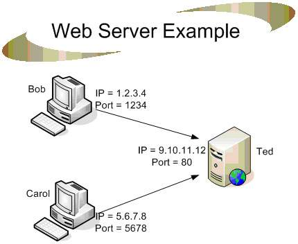

Con web server o server web si intende un'applicazione software,
installata all'interno di un server fisico, in grado di gestire le richieste
HTTP (porta 80) o HTTPS (porta 443) provenienti dai vari client,
tipicamente attraverso i rispettivi web browser. L'insieme di tutti i web
server a livello mondiale dà vita al World Wide Web, uno dei servizi più
utilizzati della rete Internet.
Tipo Mac e Apache sono dei tipi di web server.
